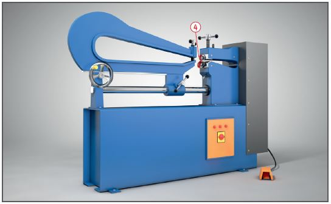
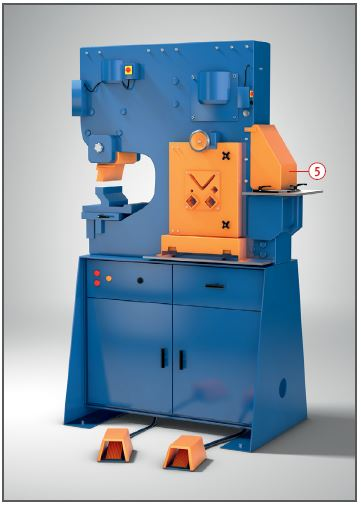

Bei der Handhabung von Blechen schnittfeste Schutzhandschuhe tragen.
Zusätzliche Hinweise
Tafelscheren
Schnittlinie sowie Stempel- oder Balkenniederhalter auf ganzer Länge durch Schutzleiste oder Schutzgitter abdecken .
Hub der Niederhalter so gering wie möglich einstellen und der jeweils zu schneidenden Materialdicke anpassen .
Nur abgedeckte Fußschalter anschließen bzw. verwenden.
Auf ordnungsgemäße Funktion der Nachschlagsicherung achten.
Verhinderung des Zuganges von der Rückseite durch verriegelte bewegliche trennende Schutzeinrichtung oder berührungslos wirkende Schutzeinrichtung .
Umrüst- und Reparatur arbeiten niemals an laufender Maschine durchführen. Bei Instandhaltungsarbeiten die mechanische Hochhalteeinrichtung, z. B. Abstützung oder Sperrvorrichtung für die Einrückung der Messerbewegung benutzen.
Beleuchtung der gesamten Schnittlinie.
Vermeidung des Herunterfallens der Bleche auf der Rückseite (Lärmschutz).
Betriebsanweisung an der Tafelschere anbringen.

Rundscheren
Kraftbetriebene Rundscheren an der Einlaufseite des Obermessers mit Fingerabweiser ausrüsten .

Universalscheren
Werden beim Auslösen des Schneidevorgangs mehrere Werkzeuge gleichzeitig betätigt, sind die nicht benutzten Werkzeuge gegen unbeabsichtigtes Hineingreifen zu sichern .
Lange Werkstücke unterstützen.
Beschäftigungsbeschränkungen
Jugendliche über 15 Jahre dürfen nur unter Aufsicht eines Fachkundigen und wenn es die Berufsausbildung erfordert an kraftbetriebenen Scheren arbeiten.
Jugendliche unter 15 Jahre dürfen nicht an diesen Maschinen beschäftigt werden.